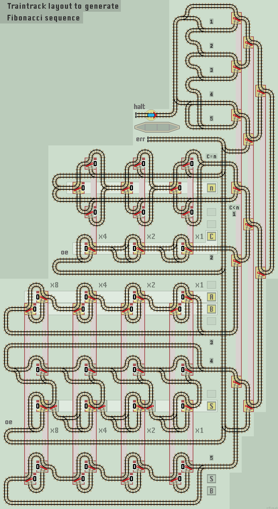

Fibonacci Number Sequence
Fibonacci numbers form the sequence 0, 1, 1, 2, 3, 5, 8, 13, etc. The next term is the sum of the previous two terms, A+B. The nth term is held in register S. The initial values for the first two terms are 0 (in register A) and a 1 (in register B). They can be set to different values, but leaving both set to 0 produces (correctly) a sequence of zeros. ProgramWe need 5 registers:
|
|
To run a calculation, registers A and B are set to the first two terms, and the input register n to the nth term required. The train then follows the main program loop:
- 1/ If Count = n then Halt. Else...
- 2/ Increment Count
- 4/ Copy B to A
- 5/ Copy S to B
- Add A to S. This is the same as placing A+B into S.
The 5 step loop uses 5 functions, requiring 6 MUX lines:
- Comparator function, to Halt if Count = Input (requires 2 MUX lines)
- Count Up function, to increment register C
- Acumulator function, to add value of A to S
- Copy function, to copy register B to A
- Copy function, to copy register S to B
The functions are stacked in such a manner as to to allow efficient vertical linking of the data register points. We need 6 MUX lines (the Comparator requires 2). The program loop needs to cross over two pairs of lines to carry out the sequence 1,2,3,5,4. The unused MUX lines are connected back to the error line, along with the comparator 'C>n' line.
| 
|
| Click layout to pause/run train | Click points to switch 0/1 | Click start circle to reset train/points |
| Lazy points switch between upper 0 or lower 1 branch lines Trains arriving on a branch line switch the point to that line |
|
| Sprung points allow branch line trains to join the main line All main line trains go straight ahead and never 'branch off' |
Notes
The usual values of registers A and B is 0 and 1, which produces the default Fibonacci sequence.
Setting A=0 and B=1 will generate the sequence 0, 1, 1, 2, 3, 5, 8 and 13.
Setting A=0 and B=2 will generate the sequence 0, 2, 2, 4, 6 and 10.
Setting A=0 and B=3 will generate the sequence 0, 3, 3, 6, 9 and 15 etc.
After the train has halted, increment n to calculate further terms. If n is set to less than C though, an error occurs.